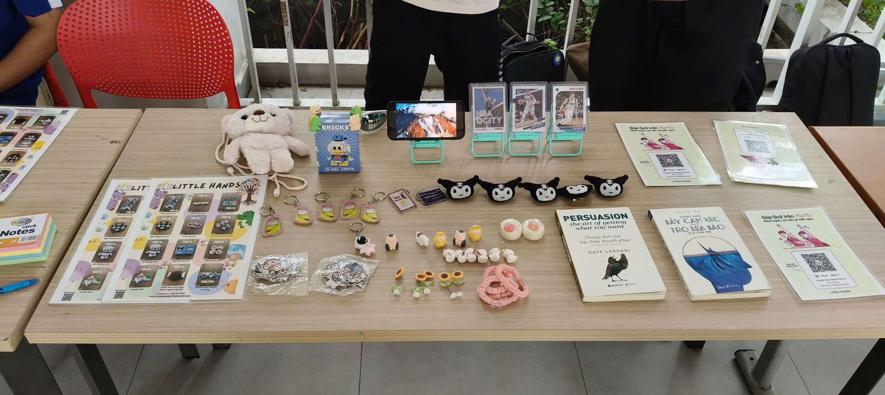

OUR STORY
Những món đồ nhỏ,
một hành trình ý nghĩa.
Little Hands là dự án gây quỹ do sinh viên thực hiện, kết hợp các sản phẩm second-hand đã được chọn lọc với một số món mini decor. Nhóm mong muốn kéo dài vòng đời của đồ dùng, học cách tổ chức một hoạt động thực tế và tạo ra đóng góp thiết thực cho trẻ em có hoàn cảnh khó khăn.
Website này lưu lại những khoảnh khắc quan trọng nhất: từ chuẩn bị sản phẩm, tổ chức booth, giao lưu cùng khách hàng đến lúc hoàn thành khoản quyên góp.
